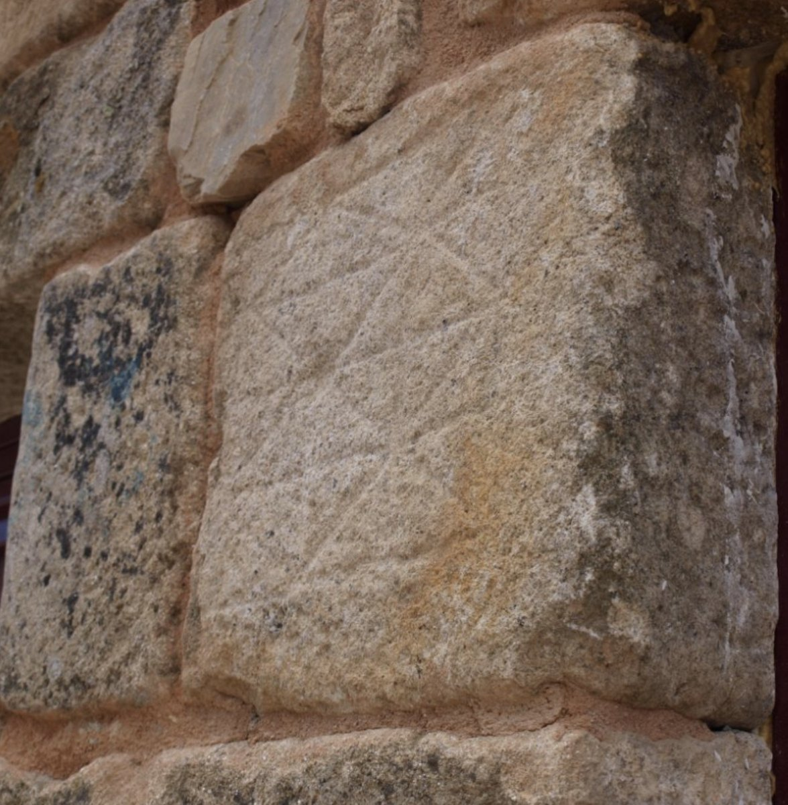

O avô das damas, jogado no Al-Andalus há mais de mil anos. Jogue contra o computador ou com alguém ao seu lado.

Um tabuleiro de alquerque gravado na pedra, como os que se riscavam há séculos.
Como se joga
Cada jogador tem 12 peças. As claras começam.
Na sua vez, mova uma peça ao longo das linhas para o ponto vizinho livre: para a frente ou para o lado, nunca para trás.
Para capturar, salte por cima de uma peça adversária vizinha para o ponto livre logo a seguir, em linha reta. Captura-se em qualquer direção, também para trás.
Depois de capturar, se a mesma peça puder capturar outra vez, continua a saltar.
Se puder capturar, é obrigado a fazê-lo.
Ganha quem capturar todas as peças do adversário, ou deixar o adversário sem jogadas.